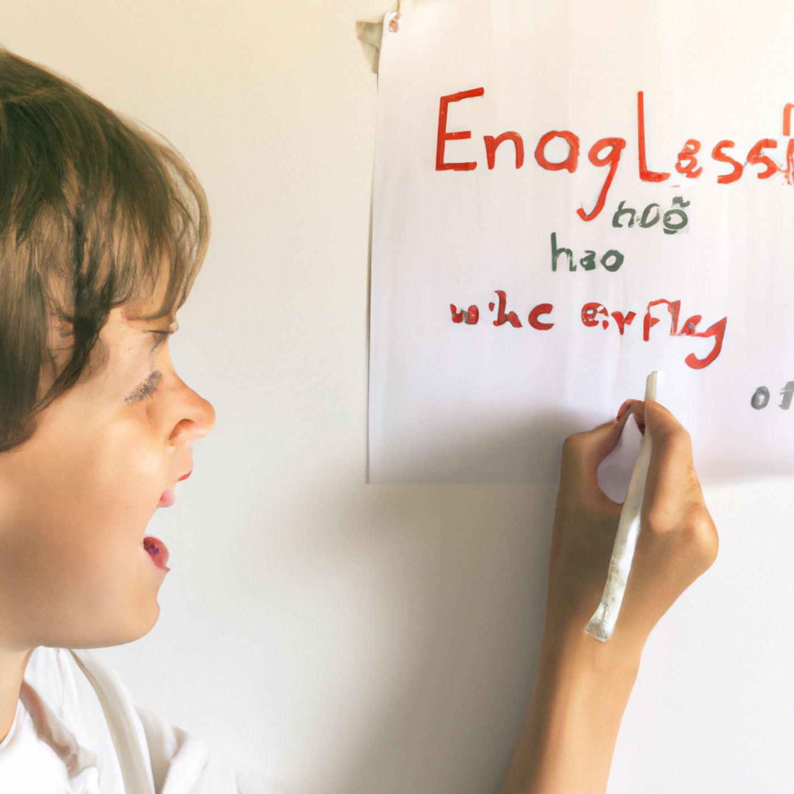

Download Story: The Math Marathon (text)
The Math Marathon
Jon slouched in his chair, staring blankly at the math problems on his desk. Numbers and equations swirled in his mind, blending into an incomprehensible mess. His teacher’s voice was just background noise as he fought to keep his eyes open. The bell rang, signaling the end of class, and Jon let out a frustrated sigh. He shoved his notebook into his backpack and trudged out of the classroom.
In the hallway, James noticed Jon’s dejected expression. “Hey, Jon, you okay?”
Jon shrugged. “I just don’t get this. Math is impossible.”
Susan, who had been walking with James, overheard and joined the conversation. “What’s giving you trouble?” she asked.
“Everything,” Jon replied. “I can’t make sense of any of it.”
Susan smiled encouragingly. “You can do it, Jon. Let’s tackle it together.”
That afternoon, they gathered in the library. Susan spread out their textbooks and notebooks on a large table. “Alright, let’s start with the basics,” she said. “What exactly don’t you understand?”
Jon sighed again, feeling overwhelmed. “Pretty much everything. Fractions, decimals, algebra...”
James nodded sympathetically. “Math can be tough, but we’ll help you. Let’s take it one step at a time.”
They started with fractions, breaking down the problems into smaller, more manageable pieces. Susan explained the concepts patiently, using visual aids and real-life examples. James turned it into a game, competing to solve problems the fastest. As they worked together, Jon began to see patterns and connections that had eluded him before.
Days turned into weeks, and Jon’s confidence grew. He no longer dreaded math class; in fact, he started to enjoy the challenge. He practiced regularly, and with Susan and James’s support, he improved steadily.
When the next math test came around, Jon approached it with a mixture of nerves and excitement. He took his time, carefully working through each problem. When the test was handed back, he could hardly believe his eyes: he had scored higher than he ever had before.
“Thanks, guys,” Jon said, grinning. “I couldn’t have done it without you.”
Susan and James smiled back. “We knew you could do it,” Susan said. “You just needed a little help.”
“Yeah,” James added. “And remember, we’re always here for you.”
Download: The math marathon audiobook
Summary: Struggling with math, Jon receives support from his friends James and Susan, who help him improve his understanding and confidence, ultimately leading to his best test score ever.
Download Story: The English Expedition (text)
The English Expedition
Jon stared at the blank page in front of him, the essay assignment feeling like an insurmountable mountain. Words jumbled in his head, refusing to form coherent sentences. English had always been his nemesis, and this essay was no different.
The bell rang, and Jon sighed, packing up his things slowly. As he walked out of the classroom, James caught up with him. “What’s up, Jon? You look stressed.”
Jon groaned. “This essay. I just can’t write anything good.”
Susan, walking with James, joined the conversation. “What’s the topic?”
Jon handed her the assignment sheet. “We’re supposed to write about our favorite book and why we like it, but I can’t even get started.”
Susan read the sheet and then smiled at Jon. “Let’s brainstorm together. What’s your favorite book?”
Jon thought for a moment. “Probably ‘Harry Potter’. I’ve always loved the magic and adventure.”
Susan nodded. “Great choice! Why do you like it so much?”
As Jon started to talk about the book, his eyes lit up. He described the characters, the plot, and the magical world with enthusiasm. Susan and James listened intently, occasionally asking questions and prompting him to elaborate.
“See?” Susan said after a while. “You’ve already got some great ideas. Let’s get them down on paper.”
They spent the afternoon in the library, jotting down notes and organizing Jon’s thoughts. They broke the task into smaller steps, making it less overwhelming. Jon wrote a rough draft, and Susan helped him refine it, while James offered encouragement and feedback.
When Jon handed in his essay, he felt a mix of nerves and hope. A week later, his teacher praised his improvement, and Jon felt a spark of pride.
“You guys are the best,” Jon said. “I actually enjoyed writing this time.”
Download: The English Expedition audiobook

Summary: Struggling with an essay, Jon receives guidance and encouragement from his friends James and Susan, transforming his writing process and earning praise from his teacher.
Download Story: The Science Struggle (text)
The Science Struggle
Jon frowned at the science textbook, the concepts of photosynthesis and cellular respiration tangling in his mind. He couldn’t keep them straight, and the upcoming test loomed over him like a dark cloud.
James nudged Jon during lunch. “You look worried. What’s up?”
Jon groaned. “Science. I just don’t get it.”
Susan, overhearing, sat down beside them. “Let’s do a study session. We can use flashcards and diagrams to make it easier.”
That afternoon, they gathered in the park, spreading their materials on a picnic table. Susan explained the processes step-by-step, using diagrams and visual aids. She showed Jon how the sun’s energy was captured by plants, and how it was converted into chemical energy during photosynthesis. James created flashcards to quiz Jon on key terms and concepts.
As they worked together, the confusion began to clear. Jon started to see the connections between the different processes. He practiced drawing diagrams and explaining the concepts out loud, with Susan and James providing feedback and encouragement.
On test day, Jon felt a surge of confidence. He answered each question carefully, remembering the study sessions and the diagrams they had drawn. When the test results came back, he saw a significant improvement.
“Couldn’t have done it without you two,” Jon said, feeling grateful and more motivated than ever.
Download: The Science Struggle audiobook
Summary:Struggling with science concepts, Jon receives help from his friends James and Susan through study sessions, leading to a significant improvement in his test results.
Download Story: The History Hurdle (text)
The History Hurdle
Jon’s history class was a blur of dates, names, and events. He couldn’t keep anything straight, and his grades reflected his struggle. The upcoming project felt like a weight on his shoulders, and he didn’t know where to start.
James noticed Jon’s dejected expression. “What’s going on?”
“History project. I’m lost.”
Susan joined them, her eyes lighting up with an idea. “Why don’t we make it a story? We can act out the events.”
They gathered at Jon’s house, transforming the living room into a stage. James and Susan helped Jon script a play, acting out historical events. They chose a period in history that Jon found interesting—the American Revolution. Together, they researched key events, figures, and dates, turning them into scenes for their play.
They practiced for days, each taking on different roles. James played George Washington, Susan was a British general, and Jon took on the role of a young revolutionary. Through this creative process, the information became more memorable and engaging.
When it was time for Jon to present his project, he felt a mix of excitement and nervousness. He set up the stage in front of his classmates, narrating the story while James and Susan acted out the scenes. His classmates were engaged and entertained, and his teacher praised his creativity and understanding of the material.
“Thanks, guys. You made history fun,” Jon said, feeling a new appreciation for the subject.
Download:The History Hurdle audiobook
Summary:Struggling with history, Jon transforms his understanding through a creative project with his friends James and Susan, leading to a successful and engaging presentation.
Download Story: The Gym Game Plan (text)
The Gym Game Plan
Jon dreaded gym class. His lack of coordination and speed made him feel out of place. Today was the obstacle course, and Jon’s stomach churned with anxiety as he watched his classmates breeze through the course with ease.
James saw Jon lagging behind and approached him. “You got this, Jon. Let’s do it together.”
Susan joined them, her enthusiasm infectious. “We’ll practice after school. It’ll be fun!”
They spent hours in the park, running and jumping, turning the practice into a game. They set up makeshift obstacles using whatever they could find—benches, trees, and playground equipment. Susan demonstrated techniques to improve balance and coordination, while James encouraged Jon to keep pushing himself.
Slowly but surely, Jon’s confidence grew. He started to enjoy the practice sessions, laughing and competing with his friends. Susan and James cheered him on, pushing him to keep going and celebrating his progress.
The next gym class, Jon approached the obstacle course with less fear. He wasn’t the fastest, but he completed it without hesitation. His teacher noticed his improvement and praised his effort, commending him for his perseverance.
“Thanks for believing in me,” Jon said to his friends. “I feel like I can do anything with you guys by my side.”
Susan and James smiled. “We’re a team,” James said. “We’ve got your back.”
“And we always will,” Susan added.
Download: The Gym Game Plan audiobook
Summary: Struggling with gym class, Jon gains confidence and improves through after-school practice with his friends James and Susan, ultimately completing the obstacle course successfully.